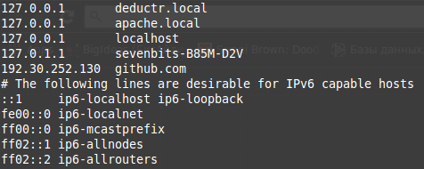

Presented by Konstantin Kolotyuk / @kkolotyuk
“Nginx is a web server with a strong focus on high concurrency, performance and low memory usage. It can also act as a reverse proxy server for HTTP, HTTPS, SMTP, POP3, and IMAP protocols, as well as a load balancer and an HTTP cache.”
$ sudo apt-get install nginx
/etc/nginx
├── conf.d
├...
├── nginx.conf // general nginx config
├── sites-available // available virtual hosts config
│ ├── default // here you can see config examples
│ ├── happydev.conf // config for virtual host happydev
│ └── ipm.conf // config for virtual host ipm
└── sites-enabled // enabled virtual hosts (symlinks)
└── ipm.conf -> /etc/nginx/sites-available/ipm.conf
server {
listen 80;
root /usr/share/nginx/html;
}
server {
listen 80;
root /PATH/TO/WEBROOT;
error_page 404 errors/404.html;
access_log logs/star.yourdomain.com.access.log;
index index.php index.html index.htm;
# static file 404's aren't logged
# and expires header is set to maximum age
location ~* \.(jpg|jpeg|gif|css|png|js|ico|html)$ {
access_log off;
expires max;
}
location ~ /\.ht {
deny all;
}
}
Create site
$ cd
$ mkdir simple-site
$ cd simple-site
$ touch hello.html
$ echo '<!DOCTYPE html>
<html>
<head>
<meta charset="UTF-8">
<title>Hello world</title>
</head>
<body>
NGINX is very fast!
</body>
</html>' >> hello.html
Configure virtual host
$ cd /etc/nginx/sites-available
$ sudo touch simple-site.conf
echo 'server {
listen 80;
root /home/sevenbits/simple-site;
}' | sudo tee --append simple-site.conf
$ sudo ln -s /etc/nginx/sites-available/simple-site.conf ../sites-enabled/
$ sudo rm ../sites-enabled/default
$ sudo service nginx reload
DOMAIN -> IP
Local DNS /etc/hosts

$ echo '127.0.0.1 simple-site.local' | sudo tee --append /etc/hosts
server {
listen 80;
server_name simple-site.local;
root /home/sevenbits/simple-site;
}
$ service nginx reload
What do we want?
server {
listen 80;
server_name tomcat.project;
location / {
proxy_pass http://localhost:8080/;
proxy_set_header Host $host;
proxy_set_header X-Real-IP $remote_addr;
}
location ~ ^/resources/(.*)$ {
alias /home/pulse/dist/$1;
}
}
$ sudo apt-get install apache2-utils
$ htpasswd -c /home/sevenbits/.htpasswd sevenbits
server {
listen 80;
server_name simple-site.local;
root /home/sevenbits/simple-site;
location / {
auth_basic "Restricted";
auth_basic_user_file /home/sevenbits/.htpasswd;
}
}
$ service nginx reload